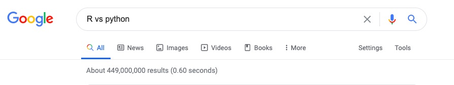
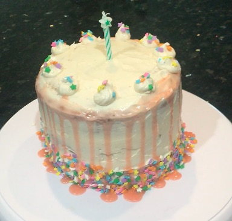

It seems like there is this great big divide between R users and Python users, with individuals on each side believing that their choice of language is the superior one. Even a quick Google search shows millions of results comparing the two. 
The reality is that R and Python can actually do a lot of the same things but just use a different code to get there. While there are certainly many pros and cons of each, R and Python respectively have their own unique individual strengths. Therefore, it ultimately comes down to your own personal preference and your project at hand. But the way I see it, why limit yourself to just one language when you can use the individual strengths of both together? The great thing is, you can actually can! You might be wondering how that is even possible? Let me show you:
# R code chunk
library(reticulate)
show <- "Cheers to the"# Python code chunk
show = "Class of 2020"
print(r.show, show)
## Cheers to the Class of 2020By using the reticulate package, I was able to use both R and Python interchangeably. Using the R code chunk, I assigned “Cheers to the” to “show”. Using the Python code chunk, I also assigned “Class of 2020” to “show”. Then I printed both “show” together to get “Cheers to the class of 2020”. It is important to note that when I went to go print the code chunk, I put an “r.” in front of “show” in order to access the R-defined object since I’m in the Python code chunk. If I was in the R code chunk, I would put “py$” in front of “show” instead. This is how you would do that:
# R code chunk
cat(c(show, py$show))
## Cheers to the Class of 2020As you can see, you get the same output of “Cheers to the Class of 2020”. By using the reticulate package, you no longer have to pick a side of R or Python. As Hannah Montana said, you get the best of both worlds!
And in honor of the Class of 2020, here is a fun celebratory cake I baked: 